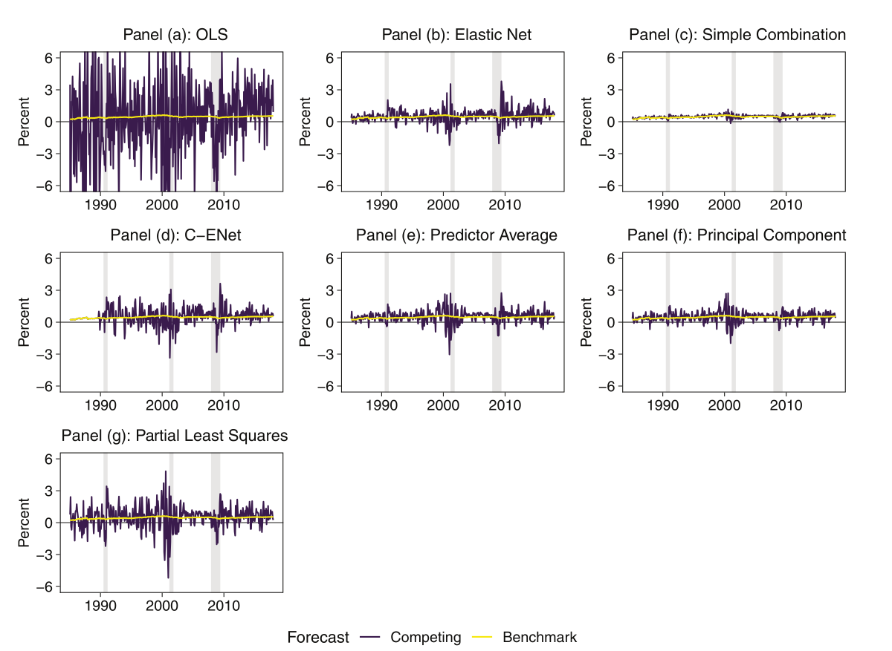
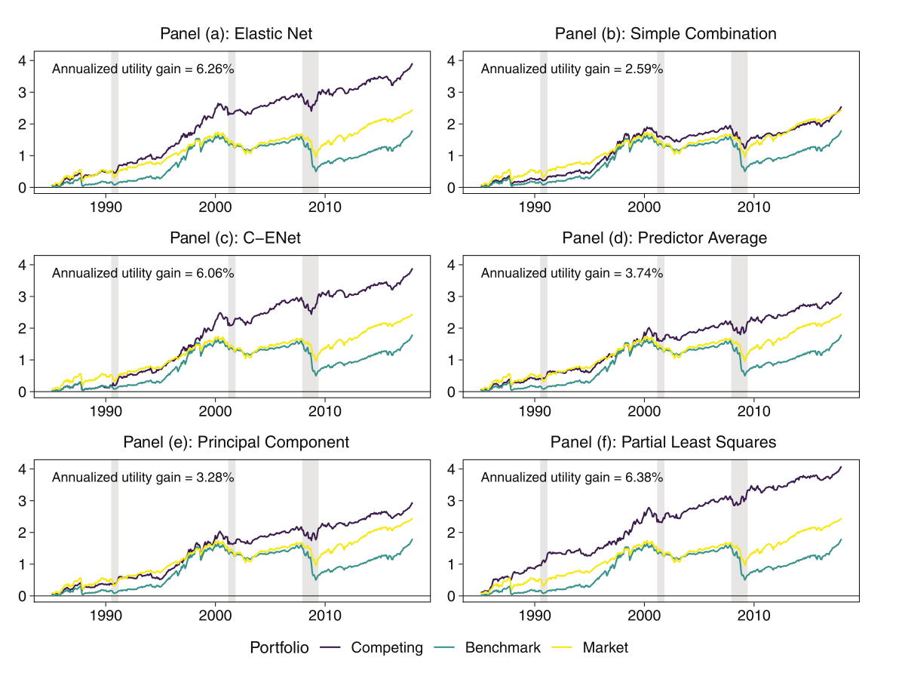

Forecasting with Machine Learning
2026-11-11
1
The idea
Anomalies, long-short portfolios, limits to arbitrage, and why anomaly returns could forecast the market
2
The methods
Seven forecasts of the market return, the expanding window, and how forecasts are evaluated
3
The results
Table II, Figures 1 and 2, and the gap between the short and the long leg, next to our replication
Unlike in Lecture 5, the authors provide data and code, so a full replication is possible
Introduction
pp. 639–644: the question, the findings, the economic mechanism and a preview of the methods.
Section I (optional)
pp. 644–651: a stylized model. Possibly read the first page, which gives the setup (Eqs. 1–3). The rest derives the sign of the predictive coefficient.
Section II
pp. 651–656: the seven models and how they are evaluated.
Sections III–IV
pp. 656–665: data (Table I) and the main results (Table II, Figures 1–3).
Section V (optional)
pp. 666–676: further evidence on limits to arbitrage (Tables III–V, Figures 4–5).
Section VI
pp. 676–677: conclusion.
Paper: “Anomalies and the Expected Market Return”, Journal of Finance, 77(1), 639–681, 2022
Authors:
Xi Dong
Baruch College, City University of New York
Yan Li
Southwestern University of Finance and Economics
David E. Rapach
Saint Louis University
Guofu Zhou
Washington University in St. Louis
Research question: Do long-short anomaly returns predict the market excess return?
Shrinkage is necessary
OLS on all 100 anomaly returns overfits: its monthly market return forecasts go beyond ±6% in some months, and its \(R^2_{\text{OOS}}\) is −2,513.86%
Anomaly returns predict the market
The six regularized forecast models beat the prevailing mean (the average past market return). Their monthly \(R^2_{\text{OOS}}\) is 0.89% to 2.81%, above the 0.5% that Campbell and Thompson (2008) call economically meaningful, and the Clark and West test is significant for all of them
Economic value
A mean-variance investor would pay a fee of 2.59 to 6.38 percentage points of returns per year to use the forecasts (forgo returns of this amount to get the same utility as with the forecasts)
Slow correction of overpricing
The signal comes from the short leg (the overpriced stocks), and predictability is stronger when market frictions are high.
This aligns with overpricing being corrected slowly (explained on the next slides)
A short-horizon signal
Predictability falls with the horizon, with no significant evidence at 12 months: the correction of mispricing plays out over a few months
Characteristic
Anomaly
Every anomaly is a characteristic, but not every characteristic is an anomaly
Payoff = return of the long leg minus return of the short leg
| Month | Long leg | Short leg | Long-short payoff |
|---|---|---|---|
| Market booms | +8% | +6% | +2% |
| Market crashes | −5% | −7% | +2% |
| Ranking right, market flat | +3% | −3% | +6% |
| Ranking wrong | +1% | +4% | −3% |
Market moves hit both legs and cancel, so the payoff depends on the ranking.
It is positive only on average (mean 0.38% per month, standard deviation 4.37%, Table I)
1
Rank
At the beginning of the month, rank all stocks on the characteristic (here the book-to-market ratio), which is known before the month’s returns
2
Cut
Split the ranking into 10 equal-sized groups (deciles). Decile 1 has the lowest values (expensive stocks, the short leg), decile 10 the highest (cheap stocks, the long leg)
3
Weight
Inside a decile, weight each stock by its market capitalization: value-weighted
4
Hold
Hold the decile portfolios for the month and record their returns. Next month, rank again
| Decile | Stock | Book-to-market | Market cap (USD bn) | Return | Equal-weighted return | Value-weighted return |
|---|---|---|---|---|---|---|
| 10 | A | 1.8 | 80 | +4% | ||
| 10 | B | 2.2 | 20 | +9% | 6.5% | \(0.8 \times 4 + 0.2 \times 9 = 5.0\%\) |
| 1 | C | 0.3 | 50 | −2% | ||
| 1 | D | 0.4 | 50 | +2% | 0.0% | \(0.5 \times (-2) + 0.5 \times 2 = 0.0\%\) |
Long-short return: 5.0% − 0.0% = 5.0%.
Value-weighting lets large firms dominate each portfolio, as in the market itself
| Cross-sectional | Time series | |
|---|---|---|
| Question | Which stocks beat which this month? | Will the market go up or down next month? |
| One observation | A stock, \(r_{i,t+1}\) | A month, \(r_{M,t+1}\) |
| Predictors | Characteristics \(x_{i,t}\) of each stock (value, size, momentum) | Variables \(z_t\) of each month (valuation ratios, interest rates, inflation) |
| Finding | Anomalies: sorted portfolios earn average returns that standard models (CAPM, Fama-French) do not explain | Few predictors beat the prevailing mean out of sample (Goyal and Welch, 2008) |
| Example | Gu et al. (2020, Lecture 5): a panel, every stock in every month | This paper |
Anomalies are a cross-sectional phenomenon
This paper asks whether they say anything about the market as a whole
Cross-section
Month \(t\): an anomaly and a return for every stock
Sort
Decile 10 minus decile 1: one long-short return \(r^{i}_{LS,t}\)
Time series
Every month, every anomaly: 100 series of long-short returns
Forecast
Regress \(r_{M,t+1}\) on the 100 long-short returns of month \(t\)
The paper takes the long-short returns of the cross-sectional literature and uses them as predictors in a time-series forecast of the market excess returns
Costs
Trading costs and fees for borrowing shares
Risk
Prices can move further away before they converge, and losses can force early liquidation
Limited capital
Only a limited amount of money can be allocated to each mispriced stock
The result: mispricing is corrected gradually, over several months.
The paper calls this mispricing correction persistence (MCP)
Underpriced stock: price 80$, worth 100$
Overpriced stock: price 120$, worth 100$
Asymmetry: frictions are more significant when shorting than when going long
\(\to\) Overpricing is corrected more slowly (Miller, 1977): stronger MCP for the short leg
1
Frictions
Short-selling frictions make it hard to correct overpricing of the stocks in the short leg
2
Slow correction
Overpricing is corrected gradually: short-leg stocks that fell this month tend to fall again next month, because correction occurs slowly. The long leg is corrected quickly, so it carries little persistence
3
Signal
A falling short leg raises the long-short return this month. The long leg also moves it, but that part does not persist
4
Market
The short-leg stocks keep falling next month, and they are part of the market: the market return is lower
In \(r_{M,t+1} = \alpha + \beta\, r_{LS,t} + \varepsilon_{t+1}\), \(\beta < 0\): a higher long-short return this month lowers the forecast of next month’s market return
Slow correction
Mispricing correction persistence
If overpricing is corrected slowly, a fall in the short leg today is followed by more falls next month, in the market too: \(\beta < 0\) (Sec. I, Eq. 15)
Long minus short
Noise reduction
The two legs share a common component unrelated to mispricing (Sec. I, Eq. 1). Taking the difference removes it
Many anomalies
Aggregation
Each anomaly return also contains noise of its own (Sec. I, Eq. 19). The noise is nearly uncorrelated across anomalies (average correlation 0.08, Table I), so combining the 100 series, as all seven models do, cancels much of it
The authors’ package provides data, R code, and output files
| Step | Task | From the authors | Detail to get right |
|---|---|---|---|
| 1 Data | Long-short anomaly returns and the market excess return | Finished returns (data files) | The raw data (CRSP, Compustat) is proprietary |
| 2 Pre-processing | Impute NAs, lag predictors, build multi-period targets | R code | |
| 3 Forecasting | Seven methods in an expanding window: one forecast per month, 1985:01–2017:12 (396 forecasts) | R code | Elastic net with AICc, OLS with dependent columns |
| 4 Comparison | \(R^2_{\text{OOS}}\) and Clark-West statistics against Table II | Output files (forecasts and tables) |
Target
Next month’s market excess return \(r_{M,t+1}\): CRSP value-weighted return of all stocks minus the 1-month T-bill rate
Predictors
The 100 long-short anomaly returns of month \(t\), \(r^{i}_{LS,t}\): decile 10 (long leg) minus decile 1 (short leg), value-weighted, rebalanced monthly
Anomalies
From the cross-sectional literature, e.g., value, profitability, investment, issuance, momentum, and trading frictions
Stocks
NYSE, AMEX and NASDAQ stocks, excluding stocks with a price below $5
Sample
1970:01–2017:12, 576 months per series
The predictable part of the monthly market return is small (low signal-to-noise ratio), so the prevailing mean is hard to beat (Goyal and Welch, 2008)
Table II also uses the 100 long-leg or the 100 short-leg anomaly returns as predictors instead
X_all replaces each NA by the average of the other anomalies that month\[\hat r^{\text{PM}}_{M,t+1} = \frac{1}{t}\sum_{s=1}^{t} r_{M,s}\]
\[r_{M,t+1} = \alpha + \sum_{i=1}^{100}\beta_i\, r^{i}_{LS,t} + \varepsilon_{t+1}\]
Step 1: 1970:01–1979:12
1980:01
First univariate forecast for C-ENet
Step 61: 1970:01–1984:12
1985:01
First evaluated forecast, all seven methods
Step 456: 1970:01–2017:11
2017:12
Dark: estimation sample. Light: the month that is forecast
The six other forecasts restrict/regularize the regression in different ways
| Forecast | Construction | Shrinkage |
|---|---|---|
| OLS | Multiple regression on all 100 anomaly returns | None |
| ENet | The same regression with an elastic net penalty, size chosen by AICc | Penalty, sets some coefficients to zero |
| Combine | The average of 100 univariate regression forecasts, one per anomaly | Averaging |
| C-ENet | The average of the univariate forecasts that an elastic net selects | Selection, then averaging |
| Avg | Univariate regression on the average of the 100 anomaly returns | One equal-weighted predictor |
| PCR | Univariate regression on the first principal component | One component, ignores the target |
| PLS | Univariate regression on the first PLS component | One component, built to covary with the target |
All six alternatives to OLS shrink the forecast towards the prevailing mean
def independent_columns(X):
"""Columns of X to keep when linearly dependent ones are dropped, in order (as lm in R)."""
A = np.column_stack([np.ones(len(X)), X])
tol = 1e-8 * np.abs(A).max() * max(A.shape)
keep = [0] # the intercept
for j in range(1, A.shape[1]):
if np.linalg.matrix_rank(A[:, keep + [j]], tol=tol) == len(keep) + 1:
keep.append(j)
return [j - 1 for j in keep[1:]]
def ols_forecaster(X_tr, y_tr, X_new):
keep = independent_columns(X_tr) # drop linearly dependent columns, as lm() in R
model = LinearRegression().fit(X_tr[:, keep], y_tr) # estimate on the training months
return model.predict(X_new[:, keep])[0] # forecast for the next monthols_forecaster() and the functions to follow receive the training data X_tr, y_tr and the new predictors X_new, and return the one-step-ahead forecast\[\hat\beta_{\text{ENet}} = \underset{\beta}{\arg\min} \left\{ \sum_{t}\big(r_{M,t+1} - x_t^\top\beta\big)^2 + \lambda\left[\rho\sum_{j=1}^{100} |\beta_j| + (1-\rho)\sum_{j=1}^{100} \beta_j^2\right] \right\}\]
\[\begin{aligned} \text{AIC}(\lambda) &= n\log\big(\text{RSS}(\lambda)/n\big) + 2\,\text{df}(\lambda)\\ \text{AICc}(\lambda) &= \text{AIC}(\lambda) + \frac{2\,\text{df}(\lambda)\big(\text{df}(\lambda)+1\big)}{n-\text{df}(\lambda)-1} \end{aligned}\]
The AICc replaces hyperparameter tuning via validation sample. Select the \(\lambda\) minimizing the AICc
The authors use glmnet in R, with mixing parameter alpha = 0.5. It writes the penalty as \(\lambda[\alpha\lVert\beta\rVert_1 + \tfrac12(1-\alpha)\lVert\beta\rVert_2^2]\) and divides the squared errors by \(2n\), so alpha = 0.5 is \(\rho = 2/3\) above
glmnet in Renet_aicc), because ElasticNet from sklearn does not match the approach exactly (the forecasts differ from the paper in about 7% of the months)enet_forecaster function relies on enet_aicc(), omitted because it is very long – see lecture notebook\[\hat r^{\,\text{Combine}}_{M,t+1} = \frac{1}{100}\sum_{i=1}^{100}\big(\hat\alpha_i + \hat\beta_i\, r^{i}_{LS,t}\big)\]
Illustration with 4 anomalies
| Anomaly 1 | Anomaly 2 | Anomaly 3 | Anomaly 4 | Combine | |
|---|---|---|---|---|---|
| Forecast of next month’s market return | +0.9% | +0.3% | −0.2% | +0.5% | ¼ (0.9 + 0.3 − 0.2 + 0.5) = +0.38% |
Each univariate forecast uses one noisy predictor. Averaging lets their errors offset, so Combine aids in isolating the signal from the noise
1
Collect
In every earlier month, 100 univariate forecasts were made and the market returns were later realized. Store both.
This history is why forecasting starts in 1980, before the evaluation
2
Regress
Regress the realized market returns on the 100 stored forecasts with an elastic net and non-negative coefficients (a Granger-Ramanathan regression)
3
Select
Keep anomalies whose forecasts receive a non-zero coefficient
4
Average
Average the forecasts – as made in the Combine approach – of the selected anomalies to produce the C-ENet forecast
The same 4 anomalies
| Anomaly 1 | Anomaly 2 | Anomaly 3 | Anomaly 4 | C-ENet | |
|---|---|---|---|---|---|
| Coefficients from the regression | 0.6 | 0 | 0.2 | 0 | selects 1 and 3 |
| Forecast | +0.9% | +0.3% | −0.2% | +0.5% | (0.9 + (−0.2)) / 2 = +0.35% |
Averaging all 100 variables regularizes strongly.
C-ENet avoids over-shrinking by averaging only the selected anomalies
def univariate_forecasts(X_tr, y_tr, X_new):
# One simple regression per anomaly: 100 forecasts
forecasts = []
for j in range(X_tr.shape[1]): # loop over the 100 anomalies
x_tr_j = X_tr[:, [j]] # anomaly j in the training months, as a column
x_new_j = X_new[:, [j]] # anomaly j this month
model = LinearRegression().fit(x_tr_j, y_tr)
forecasts.append(model.predict(x_new_j)[0])
return np.array(forecasts)
def cenet_forecaster(uni_tr, y_tr, uni_new, pm):
# uni_tr: past univariate forecasts, y_tr: associated targets,
# uni_new: current univariate forecasts, pm: prevailing mean
_, coef = enet_aicc(uni_tr, y_tr, lower=0.0)
selected = coef != 0
return uni_new[0, selected].mean() if selected.any() else pmuni_new.mean()lower=0.0 imposes non-negative coefficientspmTip
We do not go into the construction of the components, as it is rather involved. Refer to the book An Introduction to Statistical Learning in Python (ISLP), James et al., 2023, chapters 6.3, 6.4, and 12.1-12.4.
Unsupervised: PCR constructs components retaining information considering only the predictors
Supervised: PLS retains the information in the predictors relevant for the target
The 100 anomaly returns are collapsed into one predictor \(Z_t\), followed by a univariate regression
\[r_{M,t+1} = \alpha + \beta Z_t + \varepsilon_{t+1}, \qquad Z_t = \sum_{i=1}^{100} w_i\, r^{i}_{LS,t}\]
Model Avg
Equal weights
\(w_i = 1/100\): \(Z_t\) is the (cross-sectional, i.e., row-wise) average of the anomaly returns
Model PCR
Principal components: largest variance
Weights chosen so that \(Z_t\) has the largest variance explained, reducing dimensionality of the data while retaining as much information as possible. Does not account for the target
Model PLS
Partial least squares: most relevant for the target
Weights chosen so that \(Z_t\) covaries as much as possible with the market return, retaining the information in the anomalies that is relevant for the target. Accounts for the target
t = 180 # months observed
S = StandardScaler().fit_transform(X_all[:t]) # standardized anomalies
A = np.nanmean(X_na[:t], axis=1, keepdims=True) # average of the 100 anomalies in each month
def avg_forecaster(A_tr, y_tr, A_new):
model = LinearRegression().fit(A_tr, y_tr) # regress on the average
return model.predict(A_new)[0]
def pcr_forecaster(S_tr, y_tr, S_new):
pca = PCA(n_components=1).fit(S_tr) # fitting the model
Z_tr, Z_new = pca.transform(S_tr), pca.transform(S_new) # obtaining the first principal component
model = LinearRegression().fit(Z_tr, y_tr) # regress on the component
return model.predict(Z_new)[0]
def pls_forecaster(S_tr, y_tr, S_new):
pls = PLSRegression(n_components=1, scale=False).fit(S_tr, y_tr) # component and regression in one
return pls.predict(S_new).item()S: standardized anomaly returns, so that no anomaly dominates PCR and PLS due to its scaleA: the one predictor of Avg, the average of the 100 anomaly returns in each monthdef forecast_all(t, h, uni):
i = t - R # row of uni for month t
y_all = target(t, h) # the targets known at month t
y_tr = y_all[1:]
pm = y_all.mean() # pm: the prevailing mean (benchmark)
# Window function: extracts training windows accounting for multi-period targets/longer horizon forecasting
X_tr, X_new = window(X_all[:t], t, h) # the 100 anomaly returns
S_tr, S_new = window(StandardScaler().fit_transform(X_all[:t]), t, h) # standardised
A_tr, A_new = window(np.nanmean(X_na[:t], axis=1, keepdims=True), t, h) # their average
uni_tr, uni_new = uni[:i - (h - 1)], uni[i:i + 1] # univariate forecasts: past and current
# cont'd on next slidet: the number of months observed when the forecast is madeh is the horizon of the forecast in monthsR: the 120 months of the initial estimation sampleuni has index initializing at t = R, meaning that month t has row i = t - Runi: the 100 univariate forecasts of every month after the initial estimation window, one row per month# cont'd from previous slide
return {"OLS": ols_forecaster(X_tr, y_tr, X_new),
"ENet": enet_forecaster(X_tr, y_tr, X_new),
"Comb": uni_new.mean(),
"CENet": cenet_forecaster(uni_tr, y_all[R:], uni_new, pm),
"Avg": avg_forecaster(A_tr, y_tr, A_new),
"PCR": pcr_forecaster(S_tr, y_tr, S_new),
"PLS": pls_forecaster(S_tr, y_tr, S_new),
"PM": pm} # the benchmark, kept next to the forecastst enters, so every forecast is out of sampleR, hold, h = 120, 60, 1 # initial window, holdout (months), horizon
names = ["OLS", "ENet", "Comb", "CENet", "Avg", "PCR", "PLS"] # the seven methods
t_range = range(R + hold, len(y)) # t = 180, ..., 575: forecasts of 1985:01, ..., 2017:12
uni = past_univariate_forecasts(h) # univariate forecasts for C-ENet (notebook)
results = Parallel(n_jobs=-1)(delayed(forecast_all)(t, h, uni) for t in t_range)
df = pd.DataFrame(results) # one row per forecast month, one column per method
forecasts = df[names] # the seven forecasts
benchmark = df["PM"].to_numpy() # the prevailing-mean forecast
realized = y[R + hold:] # the actual market return of each forecast montht, so the 396 forecasts are independentpast_univariate_forecasts(h): runs univariate_forecasts in every month after the initial window and stacks the results in uni, one row per monthParallel (joblib) computes them simultaneously on different processor cores)realized: the actual market return of each forecast month1
Run
Start the notebook with horizons = [1] while we continue
2
Compare
Check each row of Table II against your output once the run is done
3
Consider
Which forecasts do you expect to be significant, and why does OLS fail?
\[R^2_{\text{OOS}} = 1 - \frac{\sum_{t}\big(r_{M,t} - \hat r_{M,t}\big)^2}{\sum_{t}\big(r_{M,t} - \bar r_{M,t}\big)^2}\]
The benchmark fits the application: the prevailing mean for the market return, zero for individual stock returns (Gu et al., 2020)
\[f_t = \big(r_{M,t} - \bar r_{M,t}\big)^2 - \big(r_{M,t} - \hat r_{M,t}\big)^2 + \big(\bar r_{M,t} - \hat r_{M,t}\big)^2 = \mu + \varepsilon_t\]
The share of wealth in the market is,
\[w_{t+1|t}^\ast = \frac{1}{\gamma} \times \frac{\text{forecast return}}{\text{forecast variance}} = \frac{1}{\gamma}\times\frac{\hat r_{M,t+1|t}}{\hat\sigma^2_{t+1|t}}\]
| Forecast \(\hat r\) (volatility 4.5%) | Weight \(w^\ast\) | Position |
|---|---|---|
| 0.6% | 0.99 | almost all wealth in the market |
| 0.3% | 0.49 | half in the market |
| -0.5% | -0.82 | short the market |
Only \(\hat r\) differs between the model and the prevailing mean, so better forecasts give better weights
The investor’s excess return in month \(t+1\): \(r_{p,t+1} = w^\ast_{t+1|t}\, r_{M,t+1}\), weight times market excess return
Sharpe ratio
Utility gain
\[\text{Sharpe} = \sqrt{12}\,\frac{\bar r_p}{\sigma_p} \qquad\quad U = \bar r_p - \frac{\gamma}{2}\,\sigma_p^2 \qquad\quad \text{Gain} = 12\,\big(U_{\text{model}} - U_{\text{PM}}\big)\]
\(\bar r_p\), \(\sigma_p\): monthly average and standard deviation of \(r_{p,t+1}\). \(\sqrt{12}\) and 12 annualize the Sharpe ratio and the utility
Higher Sharpe ratio and positive utility gain: the forecast is worth money, not just a better \(R^2_{\text{OOS}}\)
gamma, var_window, w_min, w_max = 3, 60, -1, 2 # risk aversion, variance window, weight constraints
t_ev = np.arange(R + hold, len(y)) # 396 forecast months
def weights(forecast):
# Equity weight and excess return of the mean-variance investor (h = 1)
variance = []
for t in t_ev:
past = y[t - var_window:t] # the 60 months before the forecast
variance.append(past.var(ddof=1)) # their sample variance
variance = np.array(variance)
weight = np.clip(100 * forecast / (gamma * variance), w_min, w_max) # w = forecast / (gamma * variance)
return weight, weight * y[t_ev] # weights and r_p, excess returns
def utility_and_sharpe(r_p):
r = r_p / 100
utility = r.mean() - 0.5 * gamma * r.var(ddof=1) # mean minus risk penalty
sharpe = np.sqrt(12) * r.mean() / r.std(ddof=1) # annualized Sharpe ratio
return utility, sharpeMarket excess return forecasts based on the 100 long-short anomaly returns

Source: Dong et al. (2022), Figure 1. Purple: the model forecast. Yellow: the prevailing mean. Grey bars: NBER recessions. 1985:01–2017:12
| Predictors | OLS | ENet | Combine | C-ENet | Avg | PCR | PLS |
|---|---|---|---|---|---|---|---|
| Long-short return | −2,513.86 | 2.03** | 0.89*** | 2.81*** | 1.89** | 1.25** | 2.06*** |
| Long-leg excess return | −344,960.22 | −0.90 | 0.29 | −0.68 | 0.26 | 0.24 | 0.41 |
| Short-leg excess return | −13,284.68 | 1.81* | 0.72* | 0.39* | 0.75* | 0.74* | 0.84* |
Monthly \(R^2_{\text{OOS}}\) in percent, 1985:01–2017:12. *, **, ***: Clark and West test at the 10%, 5% and 1% level
Monthly \(R^2_{\text{OOS}}\) (percent) of the long-short anomaly returns, 1985:01–2017:12
| OLS | ENet | Combine | C-ENet | Avg | PCR | PLS | |
|---|---|---|---|---|---|---|---|
| Ours | −2,513.86 | 2.03** | 0.89*** | 2.81*** | 1.89** | 1.25** | 2.06*** |
| Paper | −2,513.86 | 2.03** | 0.89*** | 2.81*** | 1.89** | 1.25** | 2.06*** |
*, **, ***: Clark and West test at the 10%, 5% and 1% level. Ours: from the \(t\)-statistics with the one-sided critical values 1.28, 1.64 and 2.33
All seven \(R^2_{\text{OOS}}\) statistics and all significance levels agree with Table II
Monthly \(R^2_{\text{OOS}}\) (percent) by forecast horizon \(h\) in months: ours (paper)
| Method | \(h=1\) | \(h=2\) | \(h=3\) | \(h=6\) | \(h=12\) |
|---|---|---|---|---|---|
| ENet | 2.03 (2.03**) | 2.47 (2.47***) | 0.55 (0.55***) | −0.47 (−0.47) | −2.11 (−2.11) |
| Combine | 0.89 (0.89***) | 0.54 (0.54**) | 0.57 (0.57***) | 0.61 (0.61***) | 0.09 (0.09) |
| C-ENet | 2.81 (2.81***) | 0.08 (0.08**) | 0.85 (0.85**) | 0.77 (0.77) | −0.51 (−0.51) |
| Avg | 1.89 (1.89**) | 1.01 (1.01**) | 1.44 (1.44**) | 1.36 (1.36**) | −0.35 (−0.35) |
| PCR | 1.25 (1.25**) | 0.60 (0.60*) | 0.36 (0.36) | 0.66 (0.66*) | −0.78 (−0.78) |
| PLS | 2.06 (2.06***) | 0.17 (0.17**) | −0.16 (−0.16) | 1.32 (1.32***) | −5.94 (−5.94) |
Paper: Table II for \(h=1\), Internet Appendix Table IA.X for the other horizons. Significance from the Clark and West test (*, **, ***: 10%, 5%, 1%). OLS is far below zero at every horizon (−2,513.86 at \(h=1\) to −188,308.44 at \(h=6\)) in both
Predictability fades with the horizon, and no \(R^2_{\text{OOS}}\) is significant at \(h = 12\)
Log cumulative excess return of portfolios based on the forecasts

Source: Dong et al. (2022), Figure 2, 1985:01–2017:12. Purple: investor using model forecast.
Teal: investor using prevailing-mean forecast. Yellow: investor holding the market.
Annualized Sharpe ratio and utility gain (percent per year)
| Prevailing mean | OLS | ENet | Combine | C-ENet | Avg | PCR | PLS | Market | |
|---|---|---|---|---|---|---|---|---|---|
| Sharpe, ours | 0.42 | 0.23 | 0.81 | 0.59 | 0.79 | 0.65 | 0.62 | 0.80 | 0.57 |
| Sharpe, paper | 0.45 | 0.23 | 0.81 | 0.59 | 0.79 | 0.65 | 0.62 | 0.80 | – |
| Gain, ours | −4.97 | 6.26 | 2.59 | 6.06 | 3.74 | 3.28 | 6.38 | ||
| Gain, paper | −4.97 | 6.26 | 2.59 | 6.06 | 3.74 | 3.28 | 6.38 |
Paper: Figure 2 and Internet Appendix Table IA.IV (our numbers are compared with the paper’s reported values, not with the authors’ output files). The paper reports no Sharpe ratio for the market
Forecasts
Table II matches exactly
All seven forecasts match Table II, and the other horizons match the authors’ output files
Economic value
Figure 2 matches, one exception
Utility gains and Sharpe ratios match Figure 2 and Table IA.IV, except the Sharpe ratio of the prevailing-mean investor (0.42 against 0.45)
Details matter
Exact match needs R’s solver
Exact agreement needed the coordinate descent of glmnet for the elastic net and an OLS that drops dependent columns, as lm does (see the appendix)
The authors’ output files tell us when we get it right, which was not possible for Gu et al. (2020)
Not replicated: the bootstrap tests of the utility gains, the long-leg and short-leg rows of Table II, the limits-to-arbitrage evidence (Sec. V), and the construction of the anomaly returns from CRSP, Compustat and I/B/E/S (we start from the finished anomaly long-short returns)
Ultimately, the replication is a success: we match the paper’s results
Example at \(t = 6\) and \(h = 2\):
| Training rows | Training targets | Forecast from | Target of the forecast |
|---|---|---|---|
| months 1–4 | \(\tfrac12(r_2 + r_3), \dots, \tfrac12(r_5 + r_6)\) | month 6 | \(\tfrac12(r_7 + r_8)\) |
Needed only for the horizon results (see Other Horizons): the signal fades after a few months
glmnet with alpha = 0.5 and 200 values of \(\lambda\)enet_aicc(X, y) is defined in the notebook, in the section “Elastic net as in R’s glmnet”. It returns the intercept and the coefficients at the AICc-optimal \(\lambda\), and lower=0 imposes non-negative coefficients. ENet and C-ENet call it
ElasticNet of scikit-learn solves the same problem, but it stops at a different tolerance and cycles through the variables in a different orderglmnet (same \(\lambda\) grid, threshold, active-set cycling and stopping rule), as on the previous slideSame lesson as in Lecture 5: the solver can decide the result
Each leg’s return = a common part + a change in mispricing:
\[r_{l,t} = f_t + \Delta u_{l,t}\ \ (l = L, S), \qquad r_{LS,t} = \Delta u_{L,t} - \Delta u_{S,t}\]
\[\operatorname{cov}(\Delta u_{S,t+1}, \Delta u_{S,t}) > \operatorname{cov}(\Delta u_{L,t+1}, \Delta u_{L,t})\]
Paper pp. 644–651, Eqs. (1), (2), (13), (15). Noise reduction (Eqs. 16–17) and aggregation (Eqs. 19–22): see “Why Should Anomaly Returns Predict the Market?”
Forecasting with Machine Learning